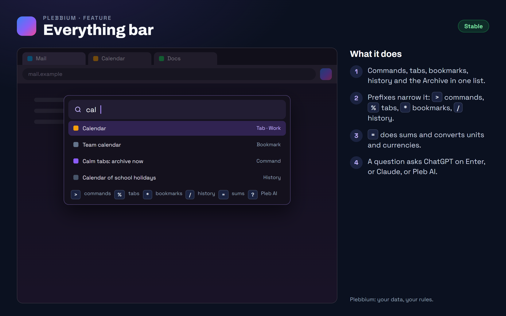

All features › Shipped › Everything bar
Everything bar
Stablesince 3604One box in the middle of the window for everything: commands, open tabs, bookmarks, history, the Archive, highlights, sums and conversions. A question asks ChatGPT, Claude or Pleb AI.

How to use it
- Open it: Ctrl+Shift+A, or the Pleb menu › Everything bar.
- Type anything: commands, tab titles, bookmarks and history come up together.
- Narrow it with a prefix: > commands, % tabs, * bookmarks, / history, ~ the Archive, " highlights, @ workspaces.
- Sums and conversions: start with =.
- Ask: ? asks Pleb AI on this computer, gpt ChatGPT, clau Claude; a plain question asks ChatGPT on Enter.
When it arrived
156.0.8078.360418 Oct 2026 · Beta and Stable
The Everything bar, in the middle of the window.
Why it works this way
In the middle, where it doesn't move
It opens near the top of the page area, centred, with the window dimmed behind it: where a command bar belongs, and where it stays put as results come and go.
A window pages can't fake
It belongs to the browser, not to a page, so no website can see it, draw over it or pretend to be it.
Quick to open
Its key belongs to the browser itself, so the bar opens at once, without waiting for anything to wake up.